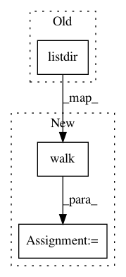

ea7f042c7a0a9ca1bef59bf06c4f48da6aca931a,chiron/utils/file_batch.py,,extract,#,24
Before Change
return True
return False
for file_n in os.listdir(root_folder):
if file_n.endswith("fast5"):
if output_file is None:
output_file = open(output_folder + os.path.sep + "data_batch_" + str(batch_idx) + ".bin", "wb+")
After Change
return True
return False
for base_dir, _ ,file_list in os.walk(root_folder):
for file_n in file_list:
if file_n.endswith("fast5"):
if output_file is None:
output_file = open(os.path.join(output_folder,"data_batch_" + str(batch_idx) + ".bin"), "wb+")
output_state = extract_fast5(os.path.join(base_dir,file_n), output_file)
if output_state:
batch_idx += 1
output_file.close()
if (FLAGS.max is not None) and (batch_idx > FLAGS.max):
sys.stdout.write("Reach the maximum %d batch number, finish read." % (FLAGS.max))
break
output_file = open(output_folder + os.path.sep + "data_batch_" + str(batch_idx) + ".bin", "wb+")
sys.stdout.write("%d batch transferred completed.\n" % (batch_idx - 1))
sys.stdout.write("File batch transfer completed, %d batches have been processed\n" % (batch_idx - 1))
sys.stdout.write("%d files scussesfully read, %d files failed.\n" % (len(success_list), len(fail_list)))
if not output_state:
output_file.close()
In pattern: SUPERPATTERN
Frequency: 3
Non-data size: 3
Instances
Project Name: haotianteng/Chiron
Commit Name: ea7f042c7a0a9ca1bef59bf06c4f48da6aca931a
Time: 2018-08-18
Author: havens.teng@gmail.com
File Name: chiron/utils/file_batch.py
Class Name:
Method Name: extract
Project Name: keras-team/keras
Commit Name: cc6e65d145ca16fb47e168d17aa58657ccfe0a8f
Time: 2016-12-11
Author: lunardog@users.noreply.github.com
File Name: keras/preprocessing/image.py
Class Name:
Method Name: list_pictures
Project Name: CyberReboot/NetworkML
Commit Name: a370d0b0b5850766f58909fb0eb04fbd940cfb2f
Time: 2017-09-06
Author: CStephenson970@gmail.com
File Name: TraditionalML/training_utils.py
Class Name:
Method Name: read_data